202317 September 2023 General rules, techniques and advice for all drivers and riders (103 to 158) Updated rules 113 and 124 as the national speed limit for built-up areas in Wales has changed from 30mph to 20mph. Annex 4. The road user and the law Added Restricted Roads (20mph Speed Limit) Order 2022 to the list of legislation.
0 Comments
202227 July 2022 Annex 4. The road user and the law Replaced Powers of Criminal Courts (Sentencing) Act 2000 with the Sentencing Act 2020 in the list of acts and regulations from 1988 onwards. Annex 5. Penalties Updated the penalties for causing death by dangerous driving and causing death by careless driving under the influence of drink or drugs. Updated the legislative reference for other consequences of offending. 1 July 2022 Introduction Added a new section about the ‘self-driving vehicles’. 25 March 2022 Updated rule 149 to clarify that the ban on using hand-held interactive communication devices when driving or supervising a learner driver covers all uses. Added guidance about using devices to make contactless payments. You must not use a device in your hand for any reason, whether online or offline. The law applies to you if you’re:
General rules, techniques and advice for all drivers and riders (103 to 158) 29 January 2022 Introduction Updated the information about the aim of The Highway Code. Added a new section about the ‘hierarchy of road users’. Added a new rule H1 about the importance of knowing The Highway Code, being considerate to other road users, and the responsibility of road users to reduce the danger they pose to others. Added a new rule H2 about giving way to pedestrians. Added a new rule H3 about not cutting across cyclists, and not turning at a junction if to do so would cause a cyclist going straight ahead to stop or swerve. Rules for pedestrians (1 to 35) Updated rule 1 to include reference to footways, and to add guidance about remaining aware of your environment and avoiding unnecessary distractions. Updated rule 5 to include organised parades as well as organised walks. Updated rule 8 to clarify other traffic should give way when pedestrians are waiting to cross at a junction. Added guidance about crossing at a place where pedestrians can be seen by drivers. Updated rule 13 to give examples of features that might separate routes shared with cyclists. Added guidance about what should happen when there are no features to separate pedestrians and cyclists. Added guidance about spaces that pedestrians also share with horse riders and horse-drawn vehicles. Updated rule 19 to clarify that drivers and riders should give way to pedestrians waiting to cross a zebra crossing, and MUST give way to pedestrians on a zebra crossing. Clarified that a zebra crossing with a central island is 2 separate crossings. Rules about animals (47 to 58) Updated rule 52 to include horse-drawn vehicles. Added guidance for inexperienced riders and people who have not ridden for a while to consider taking the Ride Safe Award from the British Horse Society. Rules for cyclists (59 to 82) Updated rule 59 to explain that evidence suggests that wearing a correctly fitted helmet will reduce your risk of sustaining a head injury in certain circumstances. Updated rule 61 to include cycle lanes. The previous rule 63 (about cycle lanes) has been merged into this rule. Updated rule 62 to give a description of cycle tracks. Changed rule 63 to be about cycling in spaces shared with pedestrians, horse riders and horse drawn vehicles. The previous rule 63 has been merged into rule 61. Updated rule 66 to clarify that cyclists can ride two abreast when they consider it safer to do so but should be considerate of the needs of other road users when riding in groups. Added guidance about being considerate of horse riders. Updated rule 67 to clarify guidance on manoeuvring, including that you should only pass to the left of large vehicles when they are stationary or slow moving and you should proceed with caution. Updated rule 69 to update the abbreviated reference to the legislation. Updated rule 71 to reference cycle-only crossing with traffic lights, and to update the guidance about advanced stop lines. Changed rule 72 to be about safe road positioning. The previous rule 72 about turning on the left has moved to rule 74. Changed rule 73 to be about junctions. The previous rule 73 about long vehicles has moved to rule 76. Renumbered rule 74 about turning at a junction (it was previously rule 72). Added guidance about turning right at junctions. The previous rule 74 (about turning right at junctions) has been merged into this rule. Changed rule 75 to be about two-stage turns. The previous rule 75 about dual carriageways has moved to rule 77. Changed rule 76 to be about going straight ahead at a junction. It includes guidance about long vehicles from the previous rule 73. The previous rule 76 about the correct procedure at roundabouts has moved to rule 78. Changed rule 77 to be about busy roads and included guidance from the previous rule 75 about dual carriageways. The previous rule 77 about roundabouts has moved to rule 79. Renumbered rule 78 about the correct procedure at roundabouts (it was previously rule 76). Added guidance about watching out for vehicles crossing your path to leave or join the roundabout. Changed rule 79 to be about turning right at roundabouts. The previous rule 79 about equestrian, pelican, puffin and zebra crossings has been renumbered to rule 81. Renumbered rule 80 about giving plenty of room to long vehicles on roundabouts (it was previously rule 78). Renumbered rule 81 about equestrian, pelican, puffin and zebra crossing (it was previously rule 79). Changed rule 82 to be about crossings, including toucan crossings (the previous rule 80), cycle track crossings (the previous rule 81) and level crossings and tramways (the previous rule 82). General rules, techniques and advice for all drivers and riders (103 to 158) Updated rule 125 to explain that unsafe speed increases the chances of causing a collision, as well as its severity, and that inappropriate speeds are intimidating, deterring people from walking, cycling or riding horses. Updated the list of road users you should reduce your speed when sharing the road with to include older adults, disabled people and horse drawn vehicles. Updated rule 140 to include references to cycle tracks. Added guidance about giving way to cyclists in a cycle lane or using a cycle track. Updated rule 144 to include guidance about avoiding driving dangerously or travelling too fast. Updated rule 151 about driving in slow-moving traffic to say you should allow pedestrians and cyclists to cross in front of you. Using the road (159 to 203) Updated rule 160 to add guidance about giving way to cyclists when you are changing direction or lane. Updated rule 163 on overtaking to advise that cyclists may pass slower-moving or stationary traffic on the right or left. Added guidance on safe overtaking distances and speeds when overtaking cyclists, horse riders and horse drawn vehicles and pedestrians. Updated rule 167 to advise drivers not to overtake on the approach to crossing facilities, where a vehicle ahead is slowing to stop for a pedestrian that is crossing from a pedestrian island, and also not to cut across cyclists going ahead, including those using cycle lanes and cycle tracks. Updated rule 170 on junctions to advise drivers and riders to give way to pedestrians waiting to cross and to remain behind cyclists and motorcyclists at junctions even if they are waiting to turn and are positioned close to the kerb. Updated rule 178 on advanced stop lines to advise drivers of large vehicles to stop sufficiently far behind the first white line so that they can see the whole area where cyclists may be waiting, allowing for any blind spot in front of the vehicle. Updated rule 183 on turning to reference cycle tracks. Updated rule 186 on signals and position at roundabouts to give priority to cyclists in certain situations. Updated rule 187 to remove references to cyclists and horse riders using roundabouts, as this guidance has moved to rule 186. Updated rule 192 to reference slow-moving traffic. Added guidance about keeping crossings completely clear, as blocking these makes it difficult and dangerous for pedestrians to cross. Added guidance about not blocking Advanced Stop Lines for cycles. Updated rule 195 on zebra crossings to include parallel crossings. Updated the guidance to reinforce the advice to give way to pedestrians waiting to cross at a zebra crossing, and to give way to pedestrians and cyclists waiting to cross a parallel crossing. Updated rule 199 on toucan, puffin and equestrian crossings to advise that drivers do not enter the crossing if they are unable to completely clear it to avoid obstructing pedestrians, cyclists or horse riders. Road users requiring extra care (204 to 225) Updated rule 204 to include information on the hierarchy of road users. Updated rule 206 on driving carefully and slowly to include a reference to needing to cross a cycle lane. Added guidance about taking care when driving through road works or past roadside rescue and recovery vehicles. Added guidance on driving carefully and slowly when approaching zebra and parallel crossings, and when approaching pedestrians who have started to cross the road at a junction. Updated rule 211 to tell drivers not to turn at a junction if it would cause a cyclist going straight ahead to stop or swerve. Added guidance about turning right across a line of slow-moving or stationary traffic to give way to cyclists and motorcyclists on the inside of traffic you are crossing. Updated rule 212 to give more guidance on giving motorcyclists, cyclists, horse riders, horse drawn vehicles and pedestrians walking in the road plenty of space when overtaking. Updated rule 213 to explain that cyclists may sometimes ride in the centre of the lane, and that it can be safer for groups of cyclists to ride 2 abreast. Added guidance to explain that on narrow sections of road, horse riders may ride in the centre of the lane. Updated rule 215 to add guidance about passing horse riders and horse drawn vehicles with care, giving them plenty of space, while recognising that horses can be unpredictable. Waiting and parking (238 to 252) Updated rule 239 to recommend a new technique (sometimes called the ‘Dutch Reach’) for opening vehicle doors. Added guidance about using electric vehicle charge points. Annex 1. You and your bicycle Added that you should be sure that the bicycle wheels spin freely. Updated to clarify that you should fit a bell to your cycle. Updated to clarify that you MUST have white front and red rear lights lit when cycling at night. Updated the information about cycle training with guidance about Bikeability. Annex 6. Vehicle maintenance, safety and security Updated the vehicle maintenance section to add audible warning systems to the list of vehicle features that you should make sure are working. Added information about daily walkaround checks for commercial vehicles. Index Updated references to reflect all the changes made to The Highway Code on 29 January 2022 202114 September 2021 Rules for drivers and motorcyclists (89 to 102) Updated Rule 91: • drivers need to get sufficient sleep before a long journey • emergency areas and hard shoulders on motorways are not to be used for rest breaks in the event of driver sleepiness • information exists in Rule 262 on appropriate places to take a break when travelling on motorways Updated Rule 97: • drivers MUST have a valid licence and insurance • vehicles MUST be in a legal and roadworthy condition • basic vehicle maintenance and safety checks should be carried out before drivers set off • sufficient vehicle fuel or charge is required for each planned journey • for emergency use, drivers are recommended to take a charged mobile telephone, containing emergency numbers, and high-visibility clothing Updated Rule 98: • reduced speed limits may apply when towing • it may take longer to build up speed when towing • trailers must be in a roadworthy condition, including tyres, lights and brakes • drivers may need to use towing mirrors when towing • vehicles which are towing should not be using the outside lanes on motorways • trailers are required by law to be fitted with a secondary coupling device • further information is available about safe towing practices General rules, techniques and advice for all drivers and riders (103 to 158) Updated Rule 124 to add images and ensure readers understand: • speed limits for motorhomes and motor caravans • speed limits for buses or coaches over 12 metres long • speed limits for special types of vehicles that are overweight or oversized • speed limits can be changed by signs • speed limits are enforced by the police Updated Rule 126 • what tailgating is, how it occurs, why it is dangerous and how to avoid it • dangerous and careless driving offences, such as tailgating, are enforced by the police • safe distances between vehicles on icy roads are ten times greater Updated Rule 138 to ensure readers understand: • the rule for overtaking also applies to dual carriageways with more than three lanes Driving in adverse weather conditions (226 to 237) Updated Rule 234 to improve wording and layout. Waiting and parking (238 to 252) Updated Rule 240: • emergency areas on motorways are not to be used for stopping or parking, except in an emergency Motorways (253 to 274) Updated Rule 253: • provisional car licence holders can only drive on the motorway when they are accompanied by an approved driving instructor and are driving a car displaying red L plates (or D plates in Wales) Updated Rule 255 to improve wording and layout. Updated Rule 256 to add images and ensure readers understand: • motorway signs and signals can apply to all lanes or individual lanes • how to recognise motorway signs and signals Updated Rule 257 to add an image and ensure readers understand: • how drivers should adjust their driving behaviour on approaching amber flashing lights • how to recognise a sign displaying amber flashing lights Updated Rule 258 to add images and ensure readers understand: • the display of red flashing light signals and a red ‘X’ on a sign identify a closed lane in which people, stopped vehicles and other hazards may be present • drivers should follow the instructions on signs in advance of a closed lane to move safely to an open lane • there can be several hazards in a closed lane • blocking closed lanes may prevent people from getting the help they need and delay reopening of the lanes • where a closed left lane crosses an exit slip road, the exit cannot be used • the road is closed when red flashing light signals and closures of all lanes are shown on a sign • how to recognise signs displaying red flashing light signals and lane or road closures • lane and road closures indicated by red flashing lights are enforced by the police Updated Rule 261 to ensure readers understand: • drivers must not exceed the speed limit displayed on a sign • drivers must not exceed the maximum speed limit of their vehicle and the road type • speed limits are enforced by the police Updated Rule 262 to ensure readers understand: • information is available in rule 91 about ensuring fitness to drive and taking breaks • service areas and other rest and refreshment facilities are available when travelling along motorways Updated Rule 263 to ensure readers understand: • it is illegal to reverse along any part of a motorway, including slip roads, hard shoulders and emergency areas Updated Rule 264 to ensure readers understand: • drivers should move over, if safe to do so, when approaching people and vehicles stopped on the hard shoulder or in an emergency area to create more space for the people and stopped vehicles Updated Rule 266 to ensure readers understand: • road markings may also be used to indicate directions on the approach to some junctions Updated Rule 269 to add images and ensure readers understand: • the hard shoulder is for emergency use only • on some motorways, the hard shoulder becomes an extra lane during periods of congestion; signs identify when the extra lane can be used • on motorways where the hard shoulder becomes an extra lane during periods of congestion, emergency areas exist for use in the event of an emergency or breakdown • the hard shoulder can only be used as an extra lane when a speed limit is shown New Rule 270 to add images and ensure readers understand: • emergency areas are located along motorways without hard shoulders or where the hard shoulder is used some of the time as an extra lane • how to recognise an emergency area • emergency areas are for emergency use only Updated Rule 271 to ensure readers understand: • drivers must not stop in an emergency area on a motorway, except in an emergency Breakdowns and incidents (275 to 287) New Rule 275: • a place of relative safety is where the people and vehicles involved in a breakdown or other incident are less likely to be at risk from moving traffic • the safest place to stop in the event of a breakdown or incident is a location which is designed for parking • on motorways and other high-speed roads, the safest place to stop is a service area • other places of relative safety on motorways and other high-speed roads include lay-bys, emergency areas and hard shoulders • hard shoulders provide less protection than other places of relative safety Updated Rule 277 to add images and ensure readers understand: • the steps to follow if their vehicle develops a problem (get left, get safe and get help) • the importance of staying away from their vehicle and remaining aware of other traffic • what to do if they break down in a live traffic lane • how to identify and communicate their location to emergency services Updated Rule 278 to add image and ensure readers understand: • how to rejoin the motorway from an emergency area • the importance of using the SOS phone in emergency areas • obstructions and debris may be present on the hard shoulder Updated Rule 279 to ensure readers understand: • the importance of switching on hazard warning lights to warn other motorists of a stopped vehicle • the need to keep seatbelts on when staying in a broken-down vehicle • as an alternative to calling 999, there is the availability of an SOS button in some vehicles for contacting the emergency services • how drivers who are deaf, hard of hearing or speech impaired can communicate with the emergency service using the emergency SMS service Updated Rule 280 to ensure readers understand: • on motorways, drivers and passengers must not retrieve items that fall from a vehicle or attempt to move an obstruction • in the event of a fallen item or other obstruction on a motorway, drivers should stop in a place of relative safety and contact the emergency services to report the incident and request help Updated Rule 281 to ensure readers understand: • warning signs or flashing lights indicate that people, including the emergency services, traffic officers, and recovery workers, may be working in the road Updated Rule 282 to ensure readers understand: • drivers should remain alert for hazards and not slow down unnecessarily when passing an incident Updated Rule 283 to ensure readers understand: • if drivers stop to give assistance, they should stop in a place of relative safety and not put themselves or their passengers in danger • how the emergency services can be contacted using an emergency telephone, a mobile telephone, or, if a vehicle has one, its SOS button • further information is available about giving first aid • there may be a need to exchange details in accordance with rule 286 Updated Rule 286 to ensure readers understand: • drivers should stop in a place of relative safety if they are involved in a collision Road works, level crossings and tramways (288 to 307) Updated Rule 288 to ensure readers understand: • vehicles displaying amber flashing lights are likely to slow down and turn into a works area • drivers should leave extra space between themselves and a vehicle that is displaying amber flashing lights Updated Rule 289 to ensure readers understand: • where large ‘Keep Left’ or ’Keep Right’ signs are displayed on a works vehicle, drivers must move over to the next lane and pass the works vehicle on the side indicated and must not return to the closed lane until it is safe to do so • works vehicles displaying the sign, ‘convoy vehicle no overtaking’, must not be overtaken Updated Rule 290 to ensure readers understand: • lanes in road works may be narrower than normal and will be marked by studs or temporary road markings • in narrow lanes, drivers need to keep a good distance from the vehicle in front to be able to clearly see the edges of the lane ahead • at the start and finish of contraflow systems in road works, there may be areas of adverse camber; drivers need to slow down and leave extra space when these areas are signed • areas marked off by cones contain significant hazards Light signals controlling traffic Updates to ensure readers understand: • what a motorway sign that displays multiple pieces of information looks like Signals to other road users Updates to add an image and ensure readers understand: • what hazard light signals are and when they should be used Traffic signs Updates to add an image and ensure readers understand: • what a variable speed limit information sign looks like Signs and Signals Annex 4. The road user and the law Updates to ensure readers understand: • “emergency areas” (as used in the proposed amendments to The Highway Code) are defined in law as “emergency refuge areas” Other information Additional website links to ensure that readers understand where to find information about: • the Strategic Road Network and its operators in England, Scotland and Wales • the current status of traffic conditions on Highways England’s network (supplementing existing website listings for Transport Wales and Transport Scotland) Additional references to ensure that readers understand where to find information about: • safe towing practices • special types vehicles 23 March 2021 Annex 6. Vehicle maintenance, safety and security Updated the vehicle maintenance section to add information about the ages of tyres allowed to be used on goods vehicles with a maximum gross weight of more than 3.5 tonnes and passenger vehicles with more than 8 passenger seats. 201920 August 2019 Changes for first aid on the road. Highway Code annex 7 on providing emergency care has been updated. This is following new guidance from the British Burns Association. Duration of the burn cooling has changed from 10 to 20 minutes: "Cool the burn for at least 20 minutes with plenty of clean, cool water." See updated version: First aid on the road 25 July 2019 Highway Code rule 258 has been updated to provide details about red ‘x’ signs on motorways. See the full rules changes: Motorways - Motorway signals (255 to 258) 201830 November 2018 Highway Code rules 149, 150, 160 and 239 have been updated to provide more detailed advice on safely using remote control parking and motorway assist functions. General rules, techniques and advice for all drivers and riders (144 to 158) Added information about using remote control parking and driver assistance systems to rule 150. Using the road (159 to 203) Updated rule 160 with information about using driver assistance systems while driving, and updated the illustration for rule 174 about box junctions. Waiting and parking (238 to 252) Updated rule 239 with information about using a hand-held device to help you to park. 4 June 2018 Rule 253 of The Highway Code has been updated to make it clear that learner drivers can now drive on the motorway with an approved driving instructor in a car with dual controls. 20 May 2018 Annex 3 - Motor vehicle documentation and learner driver requirements The MOT test changed with new defect types, stricter rules for diesel car emissions, and some vehicles over 40 years old becoming exempt. 26 April 2018 General rules, techniques and advice for all drivers and riders (103 to 158) Update rule 108 to make it clear that traffic officers have powers to stop vehicles on most motorways and some ‘A’ class roads in both England and Wales - not just England. 201728 July 2017 Annex 7. First aid on the road Updated the guidance on providing emergency care with the help of St John Ambulance, the British Heart Foundation and the British Red Cross. 1 March 2017 Annex 5. Penalties Updated the penalty table to increase penalty points for using a hand-held mobile phone when driving from 3 to 6. 20165 December 2016 published amendments General rules, techniques and advice for all drivers and riders (103 to 158) Rule 148 updated to include the information on it being offence in Scotland for anyone aged 18 or over to smoke in a private motor vehicle (unless it is parked and being used as living accommodation) when there is someone under 18 in the vehicle and the vehicle is in a public place. Also a link to the legislation has been added. Road users requiring extra care (204 to 225) Updated Rule 209 to add an image of the school bus road sign. 2015Rules for drivers and motorcyclists (89 to 102) 2 March 2015 : Updated rule 96 to reflect the change in law that you MUST NOT drive if you have illegal drugs or certain medicines in your blood above specified limits. Read more >> 5 December 2014: Updated rule 95 to reflect the change in law for lower drink drive limits in Scotland. General rules, techniques and advice for all drivers and riders (103 to 158) 1 October 2015: Updated rule 148 to include that you MUST NOT smoke in a private vehicle carrying under 18s. Read more >> 6 April 2015: Updated the national speed limit for goods vehicles (of more than 7.5 tonnes maximum laden weight) in England and Wales on single carriageways from 40 miles per hour (mph) to 50mph, and on dual carriageways from 50mph to 60mph. Read more >> 2 September 2014: Updated rule 147 about throwing things out of a vehicle from 'should not' to 'MUST NOT'. 2 April 2014: Changed 'Vehicle and Operator Services Agency (VOSA)' to 'Driver and Vehicle Standards Agency (DVSA)' in rule 107. Annex 3. Motor vehicle documentation and learner driver requirements 8 June 2015: Removed references to needing a paper counterpart to the photocard driving licence. 1 October 2014: Removed references of needing to display a tax disc in vehicles following their abolition. Annex 5. Penalties 5 June 2015: Updated the penalty table to remove the £5,000 limit on fines for the most serious offences. 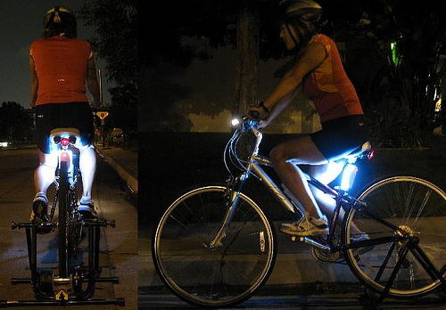 Bicycles should be fitted with front and rear lights to make cyclists more visible in the dark. According to the THINK! Cycling Campaign, the number of cyclists seriously injured has increased in recent years, faster than the increase in cyclists on the roads. If you are planning to start cycling on the road, it is important to make sure you have a full understanding of the Highway Code and know how to keep yourself safe. Below we have outlined some of the key rules from the Highway Code for cyclists to follow. Section 59 Section 59 of the Highway Code explains the appropriate clothing cyclists should wear in order to make it easier for other road users to spot them and help to keep them protected in the case of a collision. Cyclist clothing:
This section of the Highway Code is all about cyclists’ lights and reflectors. At night cyclists must have their white front and red rear lights lit. Their bicycles must also be fitted with a red rear reflector and amber pedal reflectors. White front reflectors and spoke reflectors can also increase your visibility to other road users. Flashing lights are permitted but cyclists riding in areas without street lighting should use a steady front lamp instead. 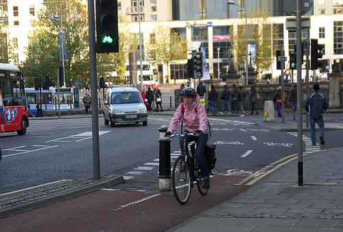 Cyclists should use dedicated cycle lanes and routes wherever possible. Section 61
Section 61 covers cycle routes and other facilities for cyclists. If cycle routes are available cyclists should make use of them, as they can make their journeys safer. Cyclists should also use advanced stop lines, cycle boxes and toucan crossings, unless it is unsafe to do so. Section 62 Section 62 covers the use of cycle tracks, which can be used to make a journey safer. Cycle tracks are usually located away from the road, but are sometimes found alongside footpaths and pavements. Sometimes cycle tracks will have a separate path for pedestrians, however this is not always the case. If you are using a segregated path, it is important to make sure you stay on the right side of the track to avoid colliding with pedestrians. Be on high alert in case pedestrians pass into your lane without realising. If you are sharing a path, take extra care and give plenty of room to children, the elderly and disabled people. You should always be riding at a speed that would allow you to slow down and stop if necessary. Section 63 Cycle lanes are marked by a white line (which may be broken) and are found alongside the carriageway. Although not compulsory, you should use the lanes whenever practical as they can make your journey safer. If you need to leave the cycle lane, always check that it is safe to do so and signal to other road users. Section 64 Something that confuses many cyclists is whether or not they are allowed to cycle on the pavement. According to Laws HA 1835 section 72 & RSA 1984, section 129, cyclists must not cycle on the pavement. Section 65 Cyclists can use bus lanes when permitted to by road signs. Take extra care and watch out for people getting on or off buses. Only overtake a bus pulling into a bus lane if it is safe to do so. Do not pass between the kerb and a bus when it is at a stop. Section 66 This section explains what cyclists should and should not do when riding on the road. You should:
Follow the steps below to promote safety on the roads:
Cyclists should not carry a passenger on their bicycle, unless it has been build to carry one. They must not ride in a dangerous, careless or inconsiderate manner. Cyclists must not ride under the influence of alcohol or drugs (including some medications). Section 69 Traffic signs and traffic light signals apply to all road users. Cyclists must obey them. Section 70 Just as there are parking rules for vehicles, there are also ones for cyclists. You should always aim to use cycle stands of cycle parking facilities wherever possible and avoid leaving your bike where it would cause an obstruction or hazard to others. Section 71 A red traffic light applies to all road users. Cyclists must not cross the stop line if the traffic lights are red. Use the separate stop line for cyclists when practical. We hope this article has helped you gain a better understanding of the Highway Code for cyclists and given you more confidence in riding safely on the road. If you have any questions feel free to get in touch. Image source: Richard Masoner and samsaundersleeds The penalty table of The Highway Code has been updated. New Penalty Table >> From 1 March 2017, the penalties for using a hand-held mobile phone while driving increase to 6 points and a £200 fine. Your case could also go to court and you could be disqualified from driving or riding and get a maximum fine of £1,000. Drivers of buses or goods vehicles could get a maximum fine of £2,500. It’s illegal to use a hand-held phone or similar device while driving, or riding a motorcycle. The rules are the same if you’re stopped at traffic lights or queuing in traffic. It’s also illegal to use a hand-held phone or similar device when supervising a learner driver or rider. You must stay in full control of your vehicle at all times. The police can stop you if they think you’re not in control because you’re distracted. This includes if you’re using devices like your sat nav or car radio. When you can use a phone in your vehicle If you’re the driver, you can only use your phone in a vehicle if
Are you thinking of buying a motorbike? Before you can ride it on the road, you will need to follow the Highway Code by completing a Compulsory Basic Training course, also known as a CBT. Once you have passed the CBT you will be permitted to ride unaccompanied on the public road on a motorcycle up to 125 cc, with a power output not exceeding 11 kW. You must also ride with L-plates for up to two years. 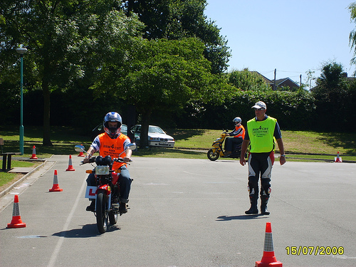 You must pass the CBT course before being able to ride on the road. What does the CBT involve? The CBT course is designed to equip motorcyclists with the basic skills they need to ride safely on the road. Attendees are given a basic introduction to road safety and must carry out an eye test. They then have to do practical training, which teaches them how to control a bike, how to use gears, how to stop and start and how to carry out relevant safety checks. During the CBT course, motorcyclists have two hours accompanied on the road with a certified instructor. The instructor ensures that motorcyclists have the knowledge and skills to drive safely on the road and have a full understanding of the basics. If you successfully complete the CTB course, you will be given a DL196 certificate that permits you to ride a motorcycle solo up to 125cc, providing you are at least seventeen years old. You must display L-plates on the front and rear and must not carry passengers or ride on the motorway. Getting your full motorbike licence After passing your CBT, you will have two years to pass the theory and practical test to gain their full motorbike licence. If you do not pass within this time period, you will be required to retake your CBT. In order to gain your full motorbike licence you will need to first pass a theory test. This involves answering multiple-choice questions and completing a hazard perception test. Once you have passed your theory test, you will be able to take your practical motorcycle test. It is recommended that you read up on the Highway Code and have formal training beforehand. There are two types of full motorcycle licence. The first is a light motorcycle licence (A1) that restricts riders to any bike up to 125 cc and a power output of 11 kW. The standard motorcycle licence (A) restricts you to riding a bike up to 25 kW and a power / weight ratio not exceeding 0.16 kW / kg for the first two years. However after this period you can ride any size of bike. Highway Code rules for motorcyclists 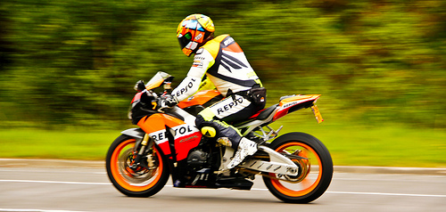 It is important to wear bright, protective clothing so other road users can easily spot you Section 83
All motorcyclists and pillion passengers must wear protective helmets. Helmets must comply with the regulations and should be fastened securely. This applies to riders of motorcycles, scooters, mopeds, tricycles and quad bikes. Section 84 Motorcyclists are advised to wear eye protectors that comply with the regulations. If they eye protectors are scratched or poorly fitted, it can limit their view and cause potential hazards. It is also recommended that you wear ear protection, as well as strong boots, gloves and suitable clothing that will help to protect you if you are involved in an accident. Section 85 Motorcyclists with a full bike licence are only permitted to carry one pillion passenger who will be required to sit astride the bike on a proper seat. They should sit forward, with both feet on the footrests. You should not carry a pillion passenger if your motorcycle is not designed to do so. Provisional licence holders are not permitted to carry a pillion passenger. Section 86 This section is all about making sure you are visible to other road users when riding in the daylight. Motorcyclists should wear a light or brightly coloured helmet, as well as florescent clothing or strips (often found on motorcycle jackets). Even with the right clothing, it is important to take extra care as other vehicle drivers may not see you or be able to judge your distance or speed correctly. Section 87 This section of the Highway Code explains what you should wear to make sure you are visible to other road users in the dark. It is recommended that you wear reflective clothing or strips to improve your visibility. These will reflect the light from the headlamps of other vehicles, helping them to spot you from a longer distance. Section 88 Section 88 of the Highway Code for CBT and motorbikes is all about manoeuvring. It is important that you are aware of what is behind and to the sides of you before manoeuvring. In traffic queues, you should always look for pedestrians crossing between vehicles, as well as vehicles changing lanes and emerging from junctions. Make sure you position your bike so that the drivers in front can see you in their mirrors. Always take great care and when filtering in slow-moving traffic, keep your speed low. We hope we have answered any questions you may have about the Highway Code for CBT and Highway Code for motorbikes in this article. If you would like any more information, feel free to get in touch. Image credits: One-Stop-Down and Natesh Ramasamy From 1 October 2015 is illegal to smoke in private vehicles that are carrying someone under 18.1/10/2015 From 1 October 2015 is illegal: - for retailers to sell electronic cigarettes (e-cigarettes) or e-liquids to someone under 18 - for adults to buy (or try to buy) tobacco products or e-cigarettes for someone under 18 - to smoke in private vehicles that are carrying someone under 18 Rules about smoking in private vehicles Private vehicles must be smokefree if they are enclosed, there is more than one person present and one of them is under 18. The rules don’t apply to e-cigarettes. Penalties The fixed penalty notice fine is £50 (for person who smokes and for driver). Somebody who commits both offences could get 2 fines. Private vehicles must be carrying more than one person to be smokefree so somebody who is 17 and smoking alone in a private vehicle won’t be committing an offence. Enforcement officers (usually the police) will use their discretion to decide whether to issue a warning or a fixed penalty notice, or whether to refer an offence to court. What classes as an enclosed vehicle The legislation covers any private vehicle that is enclosed wholly or partly by a roof. A convertible car, or coupe, with the roof completely down and stowed is not enclosed and so isn’t covered by the legislation. But a vehicle with a sunroof open is still enclosed and so is covered by the legislation. Sitting in the open doorway of an enclosed vehicle is covered by the legislation. The rules apply to motorhomes, campervans and caravans when they are being used as a vehicle but don’t apply when they are being used as living accommodation. The rules don’t apply to: - boats, ships and aircraft, as they have their own rules - work vehicles and public transport, as they are already covered by smokefree legislation gov.co.uk 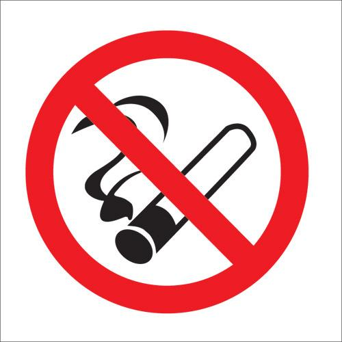 It will be an offence for a person of any age to smoke in a private vehicle that is carrying someone who is under 18 The best way to keep your children safe when they are out and about is to ensure they know how to cross a road safely and have a good understanding of the Highway Code. Below we have provided key safety rules that you should follow yourself and teach to your children. 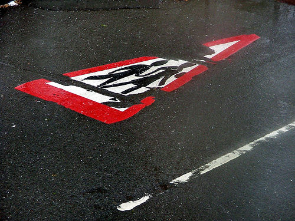 It is important to start teaching your children about road safety as early as possible. Road safety for children Read through the rules below with your children to ensure they understand road safety. It is good to practice with them, so that when they are older and perhaps walking to school on their own, they will know how to get their safely.
How to cross a road safely It is important that your children know how to cross a road safely. This is something that you will need to practice with them, so that they build up confidence in making safe decisions. You can read through the rules below with your children to help them get a better understanding of how to cross roads safely. 1. Find the safest place to cross If there is a zebra, pelican or traffic light crossing, always use it. You can also rely on police officers, school crossing patrols (lollypop men and ladies) as well as traffic wardens to help you cross roads safely. If you cannot find a crossing nearby, make sure you stop in a place where you can see clearly a long the road, from all directions and that road users can see you. 2. Stop and look all around Stand on the pavement, a little way back from the kerb, but so you can see if there are any vehicles coming. Give yourself plenty of time to look around. 3. Look and listen Use your eyes and ears to look all around for traffic and listen. Sometimes you will be able to hear traffic before you can see it. 4. Wait until it is safe to cross If traffic is coming, let is pass. Make sure there is a safe gap and that you have plenty of time to get to the other side, before you begin to cross. 5. Look and listen again When it is safe to do so, walk straight across the road to get to the other side. Keep looking and listening as you do so. Always walk, never run. Clothing for children Here in the UK we get a lot of poor weather. To make your children more visible to road users, it is a good idea to ensure they are wearing bright clothing at night or in bad weather. Fluorescent materials will also be good for highlighting their presence in daylight and at dusk. Reflective materials will do the same, only at nighttime. 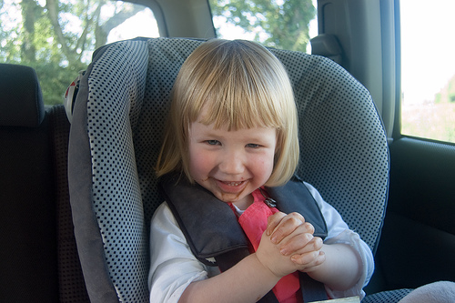 Special car seats are required for children under the age of 12 and under 135cms in height. Child passengers in vehicles
When riding in a vehicle, the law says that seatbelts must be worn at all times. If your child is under the age of twelve and under 135cms in height, they should also use a child seat, designed for their size. Rules for children:
Image credits: Andrew Mason & Mike Roberts NYC The new regulations in England and Wales for heavy goods vehicles (HGVs) over 7.5 tonnes speed limits rise from 40mph to 50mph on single carriageways, and from 50mph to 60mph on dual carriageways.
Speed limits was changed from 6 April 2015. Rule 124 of The Highway Code has been updated 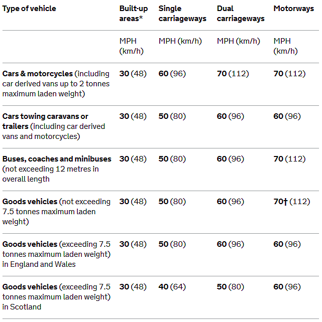 Speed limits changed for HGVs Rule 96 of The Highway Code has been updated on 2 March 2015. New rule 96: You MUST NOT drive under the influence of drugs or medicine. For medicines, check with your doctor or pharmacist and do not drive if you are advised that you may be impaired. You MUST NOT drive if you have illegal drugs or certain medicines in your blood above specified limits. It is highly dangerous so never take illegal drugs if you intend to drive; the effects are unpredictable, but can be even more severe than alcohol and result in fatal or serious road crashes. Illegal drugs have been specified at very low levels so even small amounts of use could be above the specified limits. The limits for certain medicines have been specified at higher levels, above the levels generally found in the blood of patients who have taken normal therapeutic doses. If you are found to have a concentration of a drug above its specified limit in your blood because you have been prescribed or legitimately supplied a particularly high dose of medicine, then you can raise a statutory medical defence, provided your driving was not impaired by the medicine you are taking. Laws RTA 1988 sect 4 & Law RTA 1988 sect 5A Old version of this rule:
You MUST NOT drive under the influence of drugs or medicine. Check the instructions or ask your doctor or pharmacist. Using illegal drugs is highly dangerous. Never take them if you intend to drive; the effects are unpredictable, but can be even more severe than alcohol and may result in fatal or serious road crashes. Law RTA 1988 sect 4 Halloween is a fun and exciting holiday, but as a result of increased foot traffic, the potential for vehicle related accidents with young pedestrians is significantly greater. Minimise the risk of accidents on the road by following our Halloween traffic safety tips below. 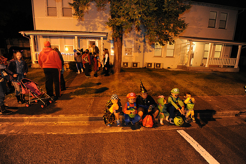 Watch out for children who may think it’s a good idea to take a break on the roadside! Drive slowly through residential areas Children can be unpredictable at the best of times, let alone when they are excited on a night like Halloween. If you happen to be driving through residential neighbourhoods on Halloween, make sure you drive extra slowly and be especially alert. Take extra time to look out for children When you are driving around on Halloween, make sure you put extra time and effort into looking out for children who may be standing at crossings, junctions and on curbs. Kids can dart out onto the road at any time. They are likely to be caught up in the excitement of trick or treating and will be less aware of cars, so make sure you are watchful of their presence. Signal for children to cross the road Even if you have spent time showing your children how to cross the road properly, be mindful that not all parents will have done the same. Sometimes kids panic when it comes to crossing the roads and their actions can be erratic and dangerous. If you see children waiting to cross the road you are driving on, slow down, stop and providing there are not any cars coming the other way, signal for them to cross in front. Enter and exit driveways slowly Children are likely to be visiting houses in their local neighbourhood trick or treating, so make sure if you are pulling in or out of a driveway, you do it slowly and with great care. Eliminate distractions inside your car As we mentioned before, you will need to be especially alert on Halloween as children can be unpredictable, particularly when they are excited. The best way to keep yourself alert is to minimise any distractions inside your car. Turn the radio off and disable your Bluetooth headset whilst you are driving around residential areas. This will allow you to fully concentrate on the road and your surroundings. Don’t overtake cars that have stopped in the road Remember that parents are likely to be dropping off and picking up their children, so if there is a car stopped in the road, refrain from overtaking it. Children could dart out onto the road to get in the car or exit the car without looking, so you need to be on high alert. If you are dropping off your children, choose a safe spot to stop and make sure you alert other motorists by signalling and putting on your hazard lights. Take extra precautions on the road Anticipate that there is likely to be more pedestrian traffic on Halloween. You may want to consider driving slower than usual and turning on your headlights earlier in the day so you can spot children more easily. Children tend to go trick or treating between 5:00pm and 8:00pm so be especially careful when driving on the road during those hours. 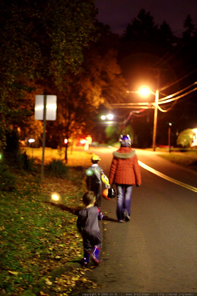 Watch out for children who may be walking along the road. Keeping your trick or treaters safe
If your children are planning on going out trick or treating on Halloween, make sure that you spend time going through tips on how to keep safe on the road. Do not let your children out unsupervised if they do not know how to cross a road safely. We also recommend putting reflective tape on your child’s costume to make them more visible to drivers. Whilst equipping them with a flashlight will help them see where they are walking, make sure you tell them not to shine it at drivers, as this could distract them and cause them to temporarily lose control of their vehicles. Follow our Halloween safety tips and help to keep both drivers and pedestrians safe. We hope you have a happy holiday! Image credits: U.S. Army Garrison Japan and sean dreillinger It is fair to say that roundabouts are one of the hardest sections of the Highway Code for beginners to master. Make sure you read through this page a few times until you completely understand it. If you are learning to drive and have any questions, be sure to note them down and ask your driving instructor next time you have a lesson. DRIVING LESSONS ONLINE - that will save you £'s on learning to drive! Start here >> Section 184 Section 184 of the Highway Code is all about what to do when approaching a roundabout. To ensure you approach roundabouts safely you should look out for traffic signs, traffic lights and lane markings, all of which will help you to prepare for manoeuvring around the roundabout and identifying the correct lane. When approaching a roundabout you should:
Section 185 Section 185 explains what you should do when you reach the roundabout. Again it is important to be aware of the traffic around you and look out for road users who may be signalling incorrectly or in some cases not signalling at all! When reaching a roundabout you should:
Section 186 This section of the Highway Code explains the signals and positions required to exit a roundabout safely. Follow the rules and you will find maneuvering roundabouts to be much less stressful. When taking the first exit (unless signs and markings indicate otherwise):
When taking an exit to the right or going full circle (unless signs or markings indicate otherwise):
When taking any intermediate exit (unless signs or markings indicate otherwise):
Section 187 Section 187 explains the road users you should watch out for and give plenty of room to when approaching and entering a roundabout. This includes:
Section 188 This section of the Highway Code is all about mini-roundabouts. You should apply the same rules to approaching and entering mini-roundabouts as you would normal roundabouts. It is important to remember that all vehicles must pass round the central markings, unless they are too large to do so. You will find that when driving around mini-roundabouts there is less room to manoeuvre and less time to signal, so take extra care. Section 189 If you are faced with a double mini-roundabout, make sure that you treat each roundabout separately (approaching and entering them in the same way you would any roundabout) and give way to traffic coming from your right. Section 190 If you are approaching a set of mini-roundabouts (common at complex junctions) you need to treat each of them separately, following the rules stated above. We hope this information has provided you with the knowledge and confidence to approach and enter roundabouts safely. If you have any questions, please don’t hesitate to get in touch. Image credits: MarkyBon and EthelRedThePetrolHead 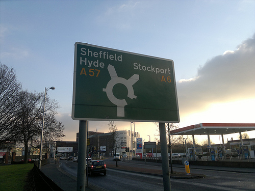 Use road signs to help you determine what lane you need to be and what exit you need to take. Learning to drive isn’t easy, but you assume that people who’ve passed their test must be good drivers. If they weren’t, surely they’d have failed, right? Wrong. Some people who pass their driving test don’t seem to have a clue. One thing’s for sure, all 11 drivers on this list need an injection of common sense, or possibly a new copy of the Highway Code. 1. Wet concrete = a driver’s worst enemy. /
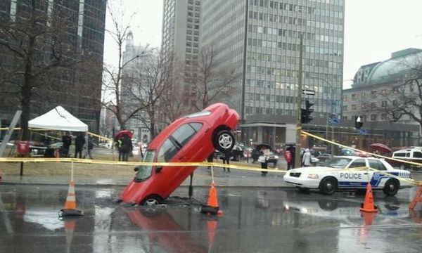
Via everythingfunny.org This driver didn’t see the ‘wet concrete’ sign and drove his car onto it. The weight of the front section sinking into the ground made the rear wheels rise into the air, making the car look like it’s been dropped from a great height! 2. Driver ends up on canal towpath. Via gazetteandherald.co.uk An elderly man in Devon took a wrong turn and ended up on a canal towpath earlier this year. Instead of reversing and turning round, he decided to carry on driving along the towpath in the hope he could find an exit. He didn’t: his insurance company ended up having to remove it with a crane. 3. “Is that a submarine?” Via mirror.co.uk Let this be a lesson to sandal wearers: it’s not a good idea to drive wearing flip flops. If you do, you could end up with your car in the swimming pool, which is what happened to this 84 year old in Altadena, California when his shoe got stuck under the gas pedal when driving out of his garage. 4. Car driver tries to take the subway. Via q8allinone.com This French driver seemed to think that it was possible to drive into this underground station in Paris! His car got stuck on the steps when he mistook the entrance for a car park. Zut alors! 5. Back of the net. Via sunnylol.com/driving-fail We can’t overstate the importance of not running into a tennis net while driving along the road. This driver did, and look what happened to him. Tennis net 1, car 0. 6. This situation is ‘snow’ joke. Via automotivepictures.co.uk This driver insisted on trying to drive around a snow drift, only to find his car tipping on end. The snow then froze around the BMW, leaving it sticking out of the ground like a telephone pole. That VW Beetle might end up with a smashed windscreen when the ground thaws! 7. Car gets stuck on a rock. Via metro.co.uk They might make good cars, but this photo proves that German people don’t always make great drivers! This German driver was speeding in a housing estate when his car went into a spin and somehow ended up balanced on this ornamental rock. 8. “Hey, that’s not a bike!” via kgw.com This very confused lady managed to drive more than a MILE down a narrow cycle lane attached to a busy bridge in Portland, Oregon before a group of cyclists stopped her. Did she think it was an extra lane on the highway? You can see a news report about the incident here. 9. Car drives down escalator. Via stevesfunnies.com A confused shopper in a US mall took a wrong turn when looking for the car park and ended up driving down an escalator instead! Thankfully no one was harmed, but the impact did make the cat’s airbag inflate. Might be best to leave the car at home next time. 10. Muddy Pool FC. Via dailystar.co.uk Footballers might be known for their coordination and skill on the pitch, but when it comes to cars all bets are off. Well known Liverpool defender Andre Wisdom proved that point by driving his £100,000 Porsche into a flooded ditch in 2013, leaving himself with a hefty repair bill. 11. Barack Obama. Via jpgmag.com This photo just goes to show that even the President of the United States isn’t immune to the occasional driving ‘fail’. Ok, so he wasn’t actually driving at the time, but when his driver somehow managed to get the huge car (nicknamed ‘The Beast’) stuck on a ramp outside the U.S. Embassy during a visit to Ireland, it took the U.S. Secret Service several hours to free it. If you don’t want to end up on a list like this in years to come, it might be a good idea to invest in your own copy of the Highway Code…and practice some questions related to it! Check out our homepage for our full list of products, including an audiobook, PDF, mobile app and road safety tips.
|
Subscribe
|